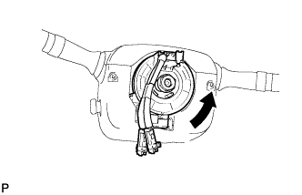

РУЛЕВАЯ КОЛОНКА В СБОРЕ (для моделей с наклонной телескопической рулевой колонкой с ручным приводом) > УСТАНОВКА |
| 1. ПОДСОЕДИНИТЕ ПРОМЕЖУТОЧНЫЙ ВАЛ № 2 РУЛЕВОГО УПРАВЛЕНИЯ В СБОРЕ |
Совместите метки на промежуточному валу рулевого управления № 2 и механизме рулевого управления с усилителем.
Вверните болт.
| 2. УСТАНОВИТЕ КОЖУХ ВЫХОДНОГО ОТВЕРСТИЯ РУЛЕВОЙ КОЛОНКИ № 1 |
Установите крышку отверстия и закрепите ее 4 болтами.
| 3. ПОДСОЕДИНИТЕ ПРОМЕЖУТОЧНЫЙ ВАЛ РУЛЕВОГО УПРАВЛЕНИЯ В СБОРЕ |
Совместите метки на промежуточном валу № 2 рулевого управления в сборе и промежуточном валу рулевого управления в сборе.
Вверните болт.
| 4. УСТАНОВИТЕ УПЛОТНЕНИЕ МЕЖДУ ФАРТУКОМ ЛЕВОГО ПЕРЕДНЕГО КРЫЛА И РАМОЙ № 1 |
Для моделей с KDSS:
Установите уплотнение фартука и закрепите его 7 фиксаторами.
Для моделей без KDSS:
Установите уплотнение фартука и закрепите его 4 фиксаторами.
| 5. УСТАНОВИТЕ РУЛЕВУЮ КОЛОНКУ В СБОРЕ |
Совместите метки на промежуточном валу рулевого управления и рулевой колонке.
Установите рулевую колонку и закрепите ее 4 гайками.
Заверните болт.
Зацепите захваты и подсоедините защиту жгута проводов и жгут проводов.
| 6. УСТАНОВИТЕ НИЖНЮЮ ОТДЕЛОЧНУЮ НАКЛАДКУ ПАНЕЛИ ПРИБОРОВ В СБОРЕ (для моделей без подушки безопасности для защиты коленей) |
| 7. УСТАНОВИТЕ ПОДУШКУ БЕЗОПАСНОСТИ № 1 ДЛЯ ЗАЩИТЫ КОЛЕНЕЙ В СБОРЕ (для моделей с подушкой безопасности для защиты коленей) |
| 8. УСТАНОВИТЕ УСИЛИТЕЛЬ ЭЛЕКТРОННОГО КЛЮЧА ЗАЖИГАНИЯ (электронный ключ зажигания) |
| 9. УСТАНОВИТЕ КОМБИНИРОВАННЫЙ ПЕРЕКЛЮЧАТЕЛЬ В СБОРЕ С ВИТЫМ КАБЕЛЕМ |
С помощью плоскогубцев зажмите захваты зажима и закрепите комбинированный переключатель в сборе с витым кабелем на на рулевой колонке с помощью зажима.
Подсоедините разъемы к комбинированному переключателю с витым кабелем.
| 10. УСТАНОВИТЕ ВЕРХНИЙ КОЖУХ РУЛЕВОЙ КОЛОНКИ |
Введите в зацепление захват, чтобы закрепить верхний кожух рулевой колонки.
Введите в зацепление 4 фиксатора, чтобы закрепить верхний кожух рулевой колонки на облицовке панели управления.
| 11. УСТАНОВИТЕ НИЖНИЙ КОЖУХ РУЛЕВОЙ КОЛОНКИ |
Введите в зацепление 2 захвата и закрепите нижний кожух рулевой колонки.
Заверните 2 винта.
| 12. ОТРЕГУЛИРУЙТЕ ВИТОЙ КАБЕЛЬ В СБОРЕ |
Выключите зажигание.
Отсоедините провод от отрицательного (-) вывода аккумуляторной батареи.
|  |
Медленно поворачивайте рукой узел витого кабеля с датчиком положения рулевого колеса против часовой стрелки до упора.
 |
После этого поверните витой кабель с датчиком положения рулевого колеса по часовой стрелки примерно на 2,5 оборота для совмещения меток.
| *a | Метка |
| 13. УСТАНОВИТЕ РУЛЕВОЕ КОЛЕСО В СБОРЕ |
| 14. УБЕДИТЕСЬ В ТОМ, ЧТО ПЕРЕДНИЕ КОЛЕСА РАСПОЛОЖЕНЫ СТРОГО ПРЯМО |
| 15. УСТАНОВИТЕ ЛЕВОЕ ПЕРЕДНЕЕ КОЛЕСО |
| 16. ПОДСОЕДИНИТЕ ПРОВОД К ОТРИЦАТЕЛЬНОМУ (-) ВЫВОДУ АККУМУЛЯТОРНОЙ БАТАРЕИ |
| 17. ПРОВЕРЬТЕ КОНТРОЛЬНУЮ ЛАМПУ АВАРИЙНОГО СОСТОЯНИЯ SRS |